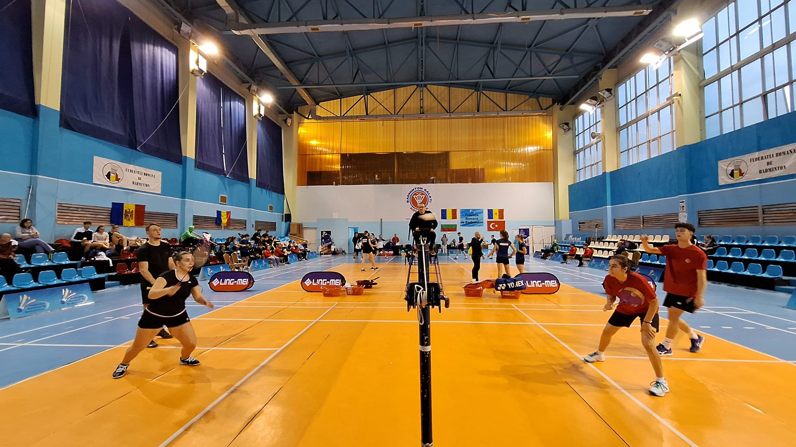
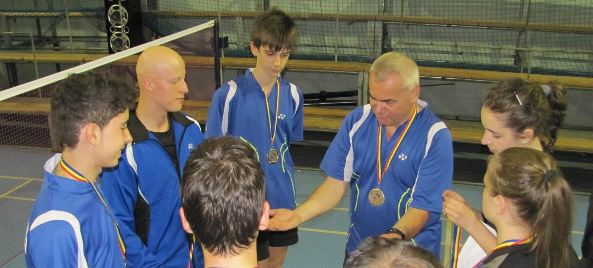

Noutăți
Articolele clubului, de la competiții, din viața clubului și despre proiecte.
-

Novi Sad – 2026
-

București, Memorialul Rotaru U15 – 2026
-

București, Cupa României U15 – 2026
-

Galați, Olimpiada Națională a Sportului Școlar – 2026
-
Începem anul în forță!
-

Serbare de sfârșit de an 2025
-
Un mediu sigur și de sprijin pentru tinerii jucători de badminton
-

Cantonament de pregătire, Slănic Moldova
-
Cupa României Juniori U13 și Tineret U23, Bacău
-
Cupa României pentru Juniori U11 și U19
-

6 medalii pentru Siderurgistul la Cupa României U15
Mai vechi
- Gălățenii Sara Bordeianu și Ionuț Nistor … ONSȘ
- Campionatul Național U11
- Campionatul Național Cadeți U15
- Campionatul Național U13
Notă de schiță. Doar Novi Sad și cantonamentul au fotografii proprii. Fotografiile de la Memorialul Rotaru, Cupa României U15 – 2026, ONSȘ 2026, serbare și „6 medalii” sunt puse din arhiva clubului, ca exemplu; articolele fără fotografie devin câmpuri de culoare. Titlul din 17 martie 2024 e prescurtat cu „…” și trebuie luat întreg de pe site-ul vechi.